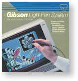
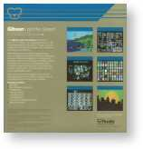

Gibson Light Pen System (LPS II)
A professional-grade light pen for the Apple II by the teenager who worked at Stanford AI Lab at age 15 — the launchpad for SpinRite and Security Now!

Overview
The Gibson Light Pen System II (LPS II) was a professional-grade light pen for the Apple II, introduced in 1981 by Gibson Laboratories, Inc. of Laguna Hills, California. Created by Steve Gibson — who had been hired by the Stanford Artificial Intelligence Laboratory at age 15 and worked on the world's first laser printer interface — the LPS II consisted of a precision light pen, an interface card that plugged into Slot 7 of the Apple II motherboard, and bundled drawing software. The light pen detected the CRT's scanning electron beam with a photodetector in its tip, using timing relative to the video signal to calculate precise X,Y screen coordinates. This gave 1:1 absolute positioning — the user drew directly on the screen surface, and the cursor followed exactly at the point of contact. The bundled software provided freehand drawing, geometric shapes, fill patterns, mirror drawing across X and Y axes, animation tools, and a Pentrak driver that let Applesoft BASIC programs access the light pen. Reviewer John J. Anderson wrote in Creative Computing (December 1983) that 'nothing comes close to the Gibson package. You really feel as if you are drawing.'
Deep dive
Steve Gibson (born 1955) had an extraordinary early career. At age 15, he was employed by Stanford University's Artificial Intelligence Laboratory (1970–1972), working alongside post-graduate students on machine learning, speech recognition, and the PDP-10 to Xerox Graphics Printer interface — the world's first laser printer interconnection. After studying EECS at UC Berkeley with a 4.0 GPA, he designed copy protection at California Pacific Computer Company, then founded Gibson Laboratories in June 1981 at age 26 to build the LPS II. When the home computer market softened in late 1983, he sold Gibson Laboratories to Atari Corporation — then recovered all rights to his proprietary technologies after management changes at Atari. A successor product was manufactured under contract to Koala Technologies as the 'Gibson Light Pen by Koala.' Gibson then consulted for Apple, Atari, Microsoft, Amiga, and Sony before founding Gibson Research Corporation in 1985, creating the disk utility SpinRite (continuously updated for nearly 40 years), writing the 'TechTalk' column for InfoWorld (1986–1993), and co-hosting the Security Now! podcast (2005–present, 1,000+ episodes).
The LPS II's interface card plugged into Slot 7 of the Apple II, which provided access to video timing signals unavailable on other slots. A tethered light pen with a photodetector in the tip detected the CRT beam as it scanned past. Timing the detection against the video sync signal gave precise X,Y position at Apple II hi-res resolution (280×192 pixels). The software included a bootable drawing program with freehand drawing, geometric shapes, custom fill patterns, mirror drawing, and an animation utility. A Pentrak driver allowed Applesoft BASIC programs to read light pen coordinates. Later versions added a tip switch. The physical interaction was described as utterly natural: the eye and hand worked together at the same point on the screen, with no translation between a separate tablet and the display.
Priced at $250 (approximately $800 in 2024 dollars), the LPS II occupied a middle ground between the KoalaPad ($125) and professional CAD digitizers like the Robographics CAD-1 ($1,095). Gibson Laboratories financed its growth entirely from profits. The company was sold to Atari Corporation around December 1983 when the home computer market softened. After Atari's management turnover, Gibson recovered his proprietary technologies and contracted with Koala Technologies to produce a successor. By the mid-1980s, light pens faded as mice, graphics tablets, and GUIs became dominant. Koala Technologies eventually folded. The LPS II remains notable as the finest light pen system produced for an 8-bit microcomputer — and as the launchpad for one of computing's most unusual careers.
Gibson's deep experience with Apple II graphics through the LPS II informed his later contributions to display technology. In 1998, he published detailed research on sub-pixel font rendering techniques used by Apple II programmers decades before Microsoft's ClearType — work he credited directly to his LPS II development years. He displayed old LPS II advertisements on his website as part of his argument about the history of sub-pixel rendering.
Team & pioneers
- Steve Gibson. Founder and president of Gibson Laboratories; designed the LPS II hardware and software; later founded Gibson Research Corporation (SpinRite, Security Now!)
- Gibson Laboratories, Inc.. Laguna Hills, California company founded June 1981; sold to Atari Corporation December 1983
Media

Sources
- Computer History Museum — LPS II Manual and Artifact
- Computer History Museum — LPS II in Revolution Exhibit
- Computer History Museum — Gibson Light Pen by Koala
- Steve Gibson's Resume (GRC.com) — full career and LPS II history
- Creative Computing, Dec 1983 — 'Drawing Conclusions' review of LPS II by John J. Anderson
- Internet Archive — LPS II Preliminary Software and Manuals
- GRC.com — 'The Origins of Sub-Pixel Font Rendering' (Gibson's technical history connecting LPS II to ClearType)
- Wikipedia — Steve Gibson (computer programmer)